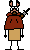

Austin High Student - Age 16 - Email at joseph.sondgeroth92@stu.austinisd.org
Here I've featured some of my favorite programs I've made. They come from different times in my life as a programmer, and show how I've improved.
This was pretty early in my journey through coding. I like the creativity of this project, as well as my approach to the various problems presented when coding this game. Inspired by the text based game Zork and various rpgs, it was fun to make and play, but did have its problems. Type "help" into the interface for a list of commands.
At this point I had learned a graphical interface through which my code could finnally have more than text to facilitate it. Nowadays I wouldn't use the graphical interface I used here, tkinter, instead I would use pygame or similar. I had also learned better coding practices like organization and a few new coding tricks. A few things I would use now include list comprehension tricks, image manipulation, and an ai algorithm for the enemies. This one unlike the last was a work in progress and not fully complete, but there is a good chance this gets some kind of version 3 eventually. The controls are the buttons onscreen and based on the Nintendo DS.
As an extra, here's the pixel art of the main character.
